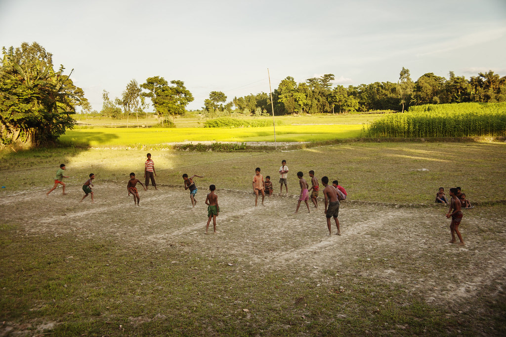
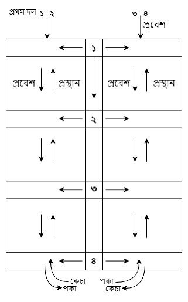

Dariabandha (দাড়িয়াবান্দা)
A physio-tactical folk sport of spatial control, physical agility, and strategy, played across rural Bengal on a structured grid court.
Overview
Dariabandha is an outdoor physio-tactical game usually played by young boys and adult men on plain ground after cutting paddy or crops, in school playgrounds, or open courtyards.
Possession, spatial defense, technique, and improvisation are the main strengths that ensure competitive excitement. Physical strategy, technique, and spontaneity are far more important in Dariabandha than showing raw muscular power.
Historical Background & Salt Merchant Allegory
Etymologically, 'Daria' means a person who rows a boat or vessel, while 'Bandha' signifies an obstacle or blockage. Symbolically, Dariabandha stands for a game of possession and defense.
According to historical folk references, the game is linked to traditional salt trading along the rivers of southern Bangladesh. Salt merchants transported salt by river, where local robbers frequently hijacked salt vessels. In Dariabandha, one team symbolically represents the salt traders trying to transport their goods, while the opposing team represents the river robbers creating obstacles.
The right of Dariabandha belongs to the community as a collective cultural ownership, passed down generations without a single documented point of origin.
Technical Specifications & Court Rules
| Court Layout | Rectangular court (often 50' x 20' or scaled) divided into 6 to 8 square boxes by vertical and horizontal walkway lines. |
|---|---|
| Key Court Zones | Front Court (Aagh Court), Back Court (Pich Court), and middle compartments linked by a central vertical walkway line. |
| Team Composition | 2 Teams: Salt Traders (Attackers) vs. Salt Smugglers / Defenders guarding walkway lines. |
| The Sikka (Captain) | The defender captain who possesses sole privilege to move along the entire vertical column walkway, creating cross-line obstacles. |
| Match Format | Decided by sets prior to start (typically best 3 out of 5 sets). |
Visual Archive & Court Layout


Gameplay Phases & Scoring Mechanics
1. Starting the Match ("Sikka Sho")
A referee tosses a coin to assign teams. Defenders take positions strictly on the boundary walk-lines. The defender captain standing on the main vertical line calls out "Sikka Sho!" to signal the start of play.
2. Kancha / Immature Stage (Front to Back Movement)
- Attacking Objective: Attackers must pass through every square box from the Front Court to the Back Court without being touched by defenders.
- Player Status: Players moving from front to back are termed Kancha (Immature) players.
- Technique: Attackers may jump, roll, drag, or dodge while keeping contact within allowed bounds.
3. Paka / Mature Stage (Back to Front Return)
- Conversion: Once an attacker safely steps outside the Back Court, they become a Paka (Mature) player.
- Winning Move: Mature players must cross back through all boxes to the Front Court. If any mature player reaches the Front Court line safely, their team wins the set!
- Tag Elimination: If any defender tags an attacker on a line, the trader team is declared "dead" (mora), and teams immediately switch roles.
Regional Variations Across Bangladesh
While core rules remain similar, distinct regional terminology exists across divisions:
- Rajshahi Division: The starting chamber is locally named Bodhon Ghar.
- Khulna & Barishal Divisions: Referred to as Ready Ghar or Ready Going.
- Kushtia District: Known as Phool Ghar.
- Manikganj Region: Features specific local rules regarding foot placement and line movement for defenders.